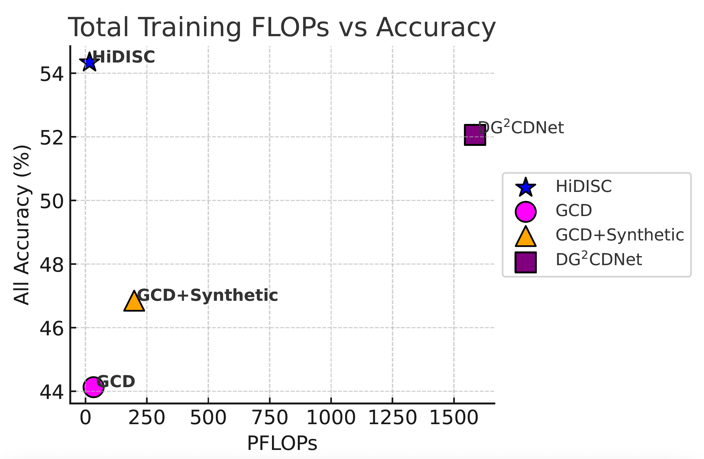
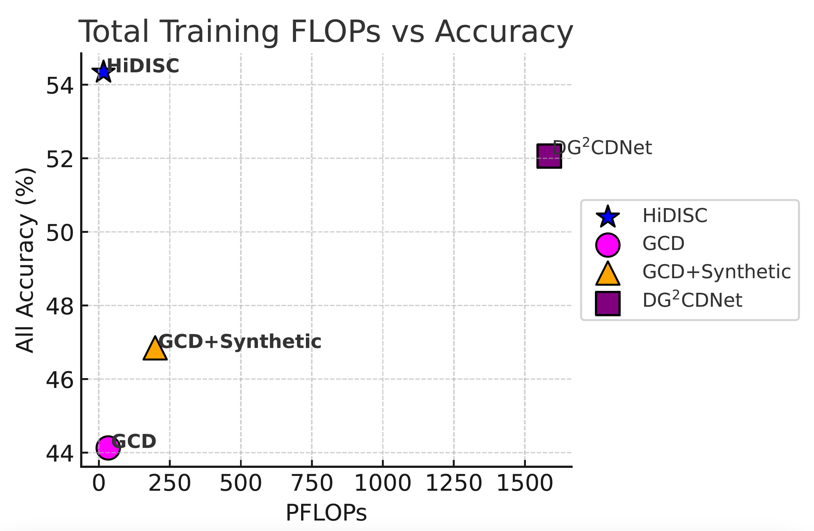
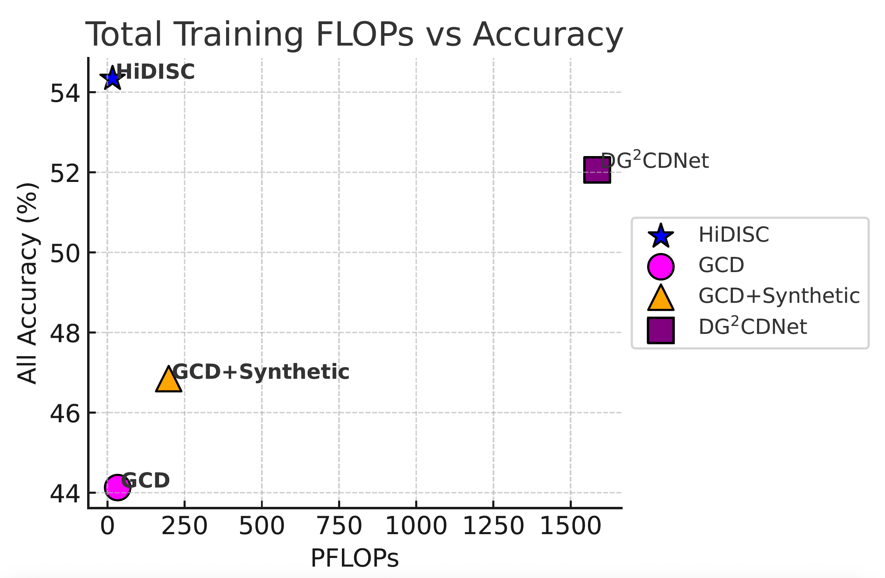

Figures
 

Generalized Category Discovery (GCD) aims to classify test-time samples into either seen categories—available during training—or novel ones, without relying on label supervision. Most existing GCD methods assume simultaneous access to labeled and unlabeled data during training and arising from the same domain, limiting applicability in open-world scenarios involving distribution shifts. Domain Generalization with GCD (DG-GCD) lifts this constraint by requiring models to generalize to unseen domains containing novel categories, without accessing target-domain data during training. The only prior DG-GCD method, DG2CD-Net, relies on episodic training with multiple synthetic domains and task vector aggregation, incurring high computational cost and error accumulation. We propose HiDISC, a hyperbolic representation learning framework that achieves domain and category-level generalization without episodic simulation. To expose the model to minimal but diverse domain variations, we augment the source domain using GPT-guided diffusion, avoiding overfitting while maintaining efficiency. To structure the representation space, we introduce Tangent CutMix, a curvature-aware interpolation that synthesizes pseudo-novel samples in tangent space, preserving manifold consistency. A unified loss—combining penalized Busemann alignment, hybrid hyperbolic contrastive regularization, and adaptive outlier repulsion—facilitates compact, semantically structured embeddings. A learnable curvature parameter further adapts the geometry to dataset complexity. HiDISC achieves state-of-the-art results on PACS, Office-Home, and DomainNet, consistently outperforming the existing Euclidean and hyperbolic DG-GCD baselines.



HiDISC consistently outperforms prior methods on DG-GCD benchmarks such as PACS and Office-Home. In particular, it achieves the best average performance across seen and novel categories, improving upon the previous state of the art by up to 4–6% on novel class discovery tasks. Ablation studies further demonstrate the effectiveness of Tangent CutMix and the unified hyperbolic loss design.
@inproceedings{Rathore2025HiDISC,
author = {Rathore, Vaibhav and Gupta, Divyam and Banerjee, Biplab},
title = {HiDISC: A Hyperbolic Framework for Domain Generalization with Generalized Category Discovery},
booktitle = {Proceedings of the 39th Conference on Neural Information Processing Systems (NeurIPS)},
year = {2025}
}